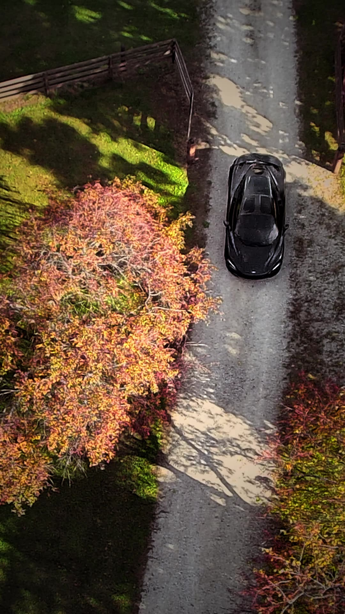
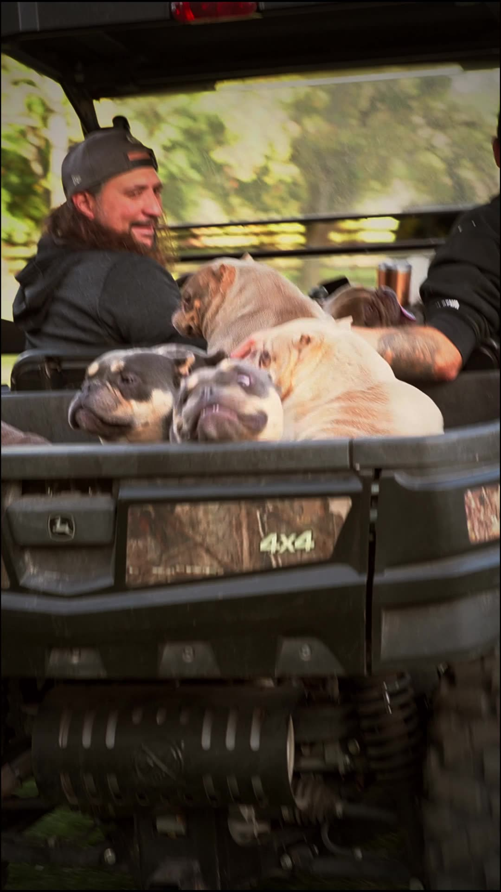
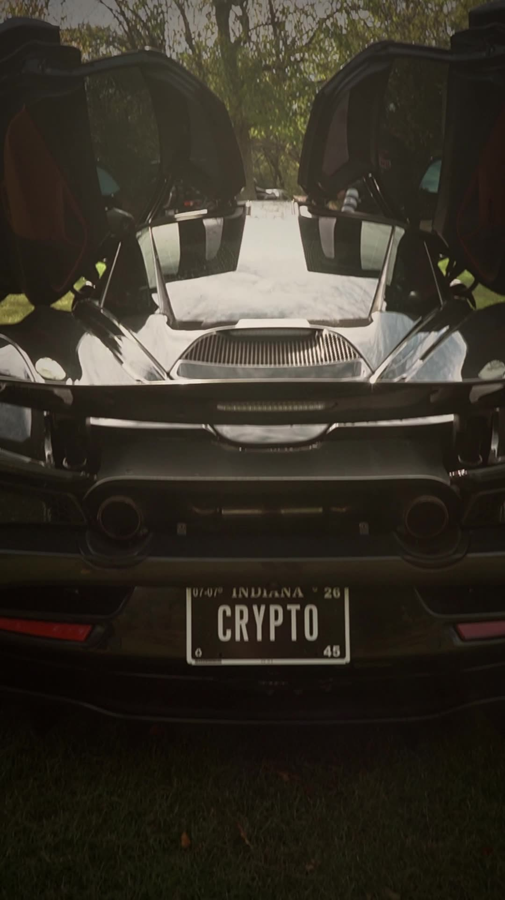

Switch to Daniel Klabunde →
Switch to Daniel Klabunde →Ether Exotics
Two vertical films for a luxury dog-breeding ranch in northern Indiana.
Overview
I made two vertical videos for Ether Exotics, a luxury dog-breeding ranch in northern Indiana that sells dogs for more than $100,000. The brief was two films of the ranch, the owner and his friends, the dogs, and the cars on the property, including a McLaren 720S. The finished pieces are Lifestyle and Living Real Estate.
The challenge
The shoot came together in about two days. There was no shot list and no schedule, and I was working with a borrowed backup camera, a Sony a6100, because my own body wasn't available. The ranch is in northern Indiana, a long drive, and the day ran on Central Time. We had a full day on the property, which is what made the short window workable.
My approach
I spent the day walking the ranch and filming what was there: the dogs, a horse, cats, chickens, the people, and the cars. A drone shot looks down on the McLaren on the driveway. I didn't go in with a plan for individual setups. I just kept moving and covered the place. The two cuts came out of that footage.
Stills



What I'd do differently
I'd build in more prep time, even on a short-notice job, and I'd keep a spare camera body ready so I'm not borrowing one the day before a shoot.